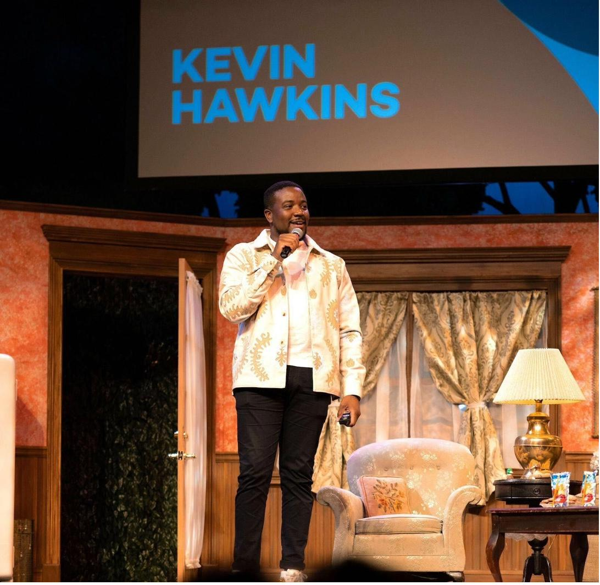

Monta came to us without a single dedicated UX leader. The platform — connecting over 220,000 charge points across operators, drivers, and installers — had the product depth of a category leader but lacked the design infrastructure to match. We came in as Monta's first VP of Product Experience with a mandate to formalize UX as a discipline, build the team, and prove that great experience directly drives growth.
The challenge was threefold: build a design culture from scratch, drive measurable MAU growth through experimentation, and contribute meaningfully to Monta's most ambitious AI bets — all while managing a team of 20+ across design, research, and content.

The first 90 days were about establishing foundations: a shared design vision, a ways-of-working playbook, career frameworks for every level from IC designer to senior principal, and research operations that could scale. We embedded UX insights into Monta's quarterly business reviews — making the connection between design decisions and retention metrics visible to leadership for the first time.
We simultaneously stood up an experimentation engine. Owning PostHog implementation end-to-end, we built A/B testing pipelines and PLG communication strategies targeting the large base of accounts without dedicated CSMs. This drove 20% month-over-month MAU growth — moving the metric that matters most to Monta's growth story.

Monta's most strategically significant initiative was the launch of Monta AI — and at its core, the NOC Agent: the platform's first AI-powered diagnostic tool. Traditionally, diagnosing a failed EV charging session required operators to manually cross-reference OCPP logs, firmware histories, payment records, and hardware specs. This process took hours and required deep technical expertise.
Our team owned the UX of the NOC Agent from concept to launch — designing the interaction model, the plain-English explanation layer, and the operator-facing interface that sits inside Monta Control 2.0. The NOC Agent cross-references 10+ data sources and delivers a diagnosis in seconds. In one documented case, a US operator improved their DC charger success rate from 31.2% to 98.3% in just 25 seconds of analysis. Monta's AI now resolves 75% of customer support tickets before they reach a human agent.

In parallel with the AI work, we led a comprehensive UX overhaul of the Monta Charge mobile app — the driver-facing product used by EV drivers to find, start, and pay for charging sessions. Mobile 2.0 focused on simplifying the core charging journey, improving session status feedback, and introducing contextual guidance that reduced support contacts and increased driver confidence.
We ran structured research sprints with drivers across multiple markets, feeding behavioral data and usability findings directly into the design iterations. The result was a product that felt significantly more intuitive without sacrificing the power-user capabilities that operators depend on.


The combination of experimentation infrastructure, AI product design, and Mobile 2.0 delivered measurable outcomes across the three metrics Monta cares about most: MAU growth, support efficiency, and operator reliability. We also established Monta's Customer Council — a structured program for continuous feedback from key accounts — and integrated UX maturity scoring into the company's quarterly planning process.